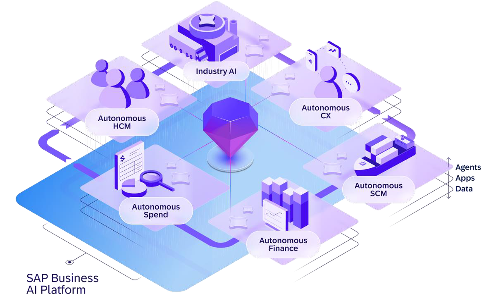

SAP BTP AI
23 · BUSINESS VALUE
Less coordination. More room for decisions.
Let agents connect the work so people can focus on outcomes and exceptions.

- Faster cycles
- Less manual coordination
- Consistent execution
- Reusable capabilities
23 · BUSINESS VALUE
Let agents connect the work so people can focus on outcomes and exceptions.
